来源：https://zwia799oeo3.feishu.cn/docx/FBeJdriQwoIadMxFWpXcwE5hnLf
超级擦亮改版有一段时间了。大家尝试之下是不是遇到创建5.9元的计划花完也没有出单就放弃了。或者投了10来个计划都没有明显的单量增长。那么超级投放究竟怎么才能出效果。这篇复盘来告诉你。
一、目前进展及成绩
二、关于我自己
三、超级擦亮介绍
四、拆解复盘
五、项目心得
六、注意事项
七、接下来的打算
目前我做的是虚拟类目，考试类为主。比如 考研、考公、各种专业考试等的相关资料（具体的有真题、笔记、ppt等各种相关资料）。
最近投的最好效果看图1，目前是擦亮花费40.22 交易额287.41。直接ROI在7，另外加上自然流量出了653单。这个品客单价0.8左右。所以是500左右的总成交额。 纯利润再460元以上。
图2 图三是效果最好的号的总效果和投流数据。
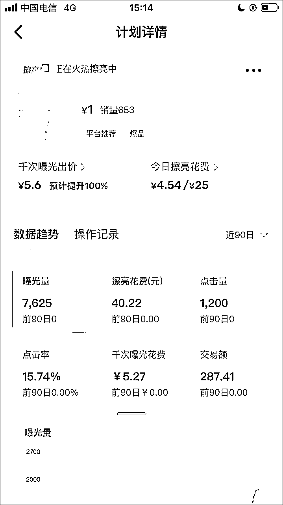
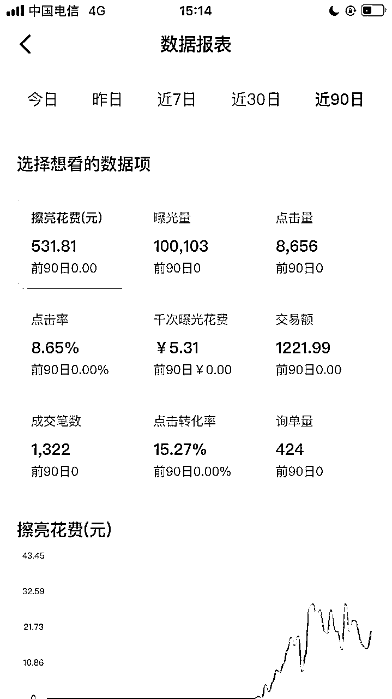
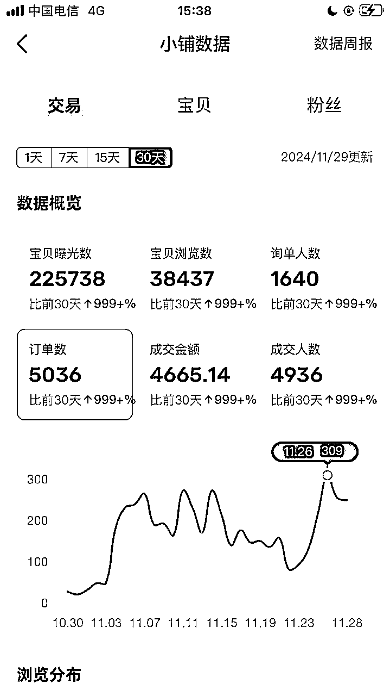
图1 图2 图三
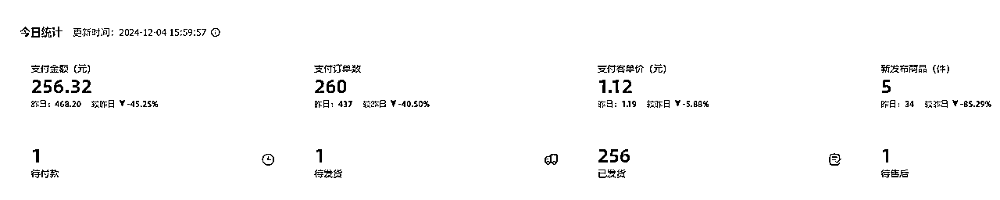
目前总体效果3个主力号。三个号最近总净收益都在400左右。
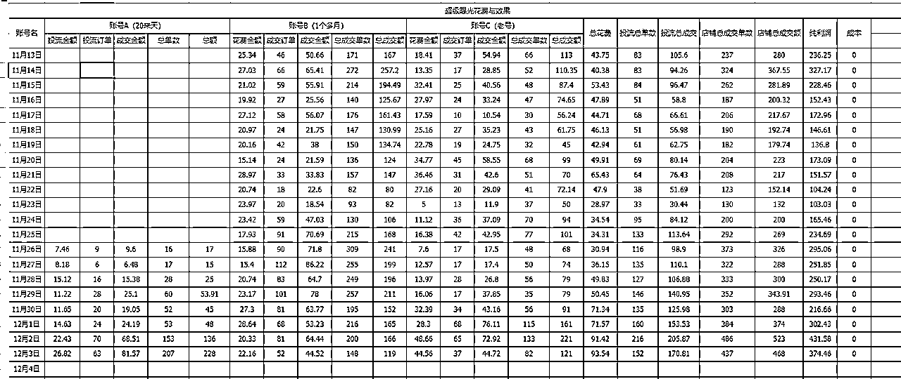
这是三个号投超级擦亮的具体数据
超级擦亮花钱主要目的就是买曝光。有更多的机会，看到的人多。如果品本身优秀的话，肯定是能够带看来更多的出单机会。
对于roi跑正的品。 除了本身付费计划出的以外，还能带动很多自然流量。自然流量也能多出很多单。很明显的一个情况，对于通过超级擦亮跑起来的爆品。 在计划设定的金额花完待结算的时候。这品的单量会明显降低。或者干脆就不出单。单等到在复投计划后。单量明显增长。
11年接触网赚，给淘宝客网站改代码，后面做过淘宝客群，用易语言写过qq加好友、一些网站app的私信程序。16年开始做自媒体，到2020年算是赚到人生第一桶金。后疫情期间搞视频号直播。最好的时候7天10万GMV.卖的年货。要不是过年，还能有更好的效果。
最近主要在全职做闲鱼虚拟，目前一天300以上净收益。
其他的可以看下我这篇文章：
闲鱼的“超级擦亮”功能是一种推广工具，它允许用户通过支付一定的费用来增加商品的曝光量。其实也就是现在闲鱼有了付费投流的功能。
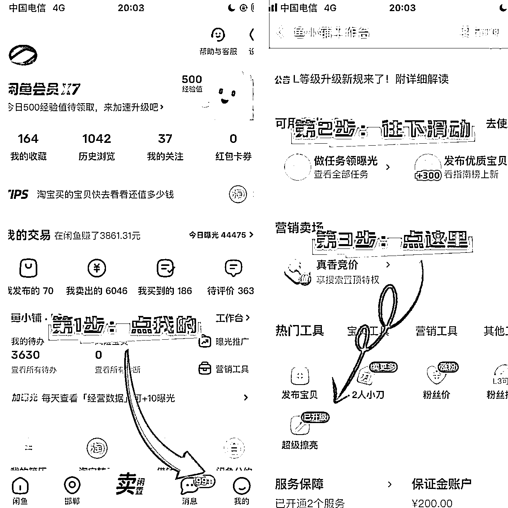
上图就是如何进入超超级擦亮这个功能的截图。
第一步，点击我的， 打开鱼小铺工作台
第二步，往下滑动屏幕
第三部，点击超级曝光按钮。
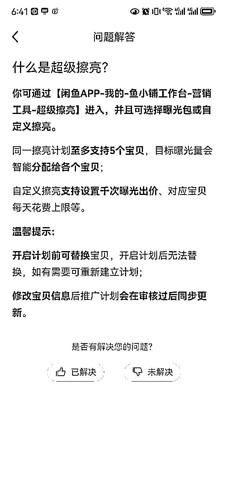
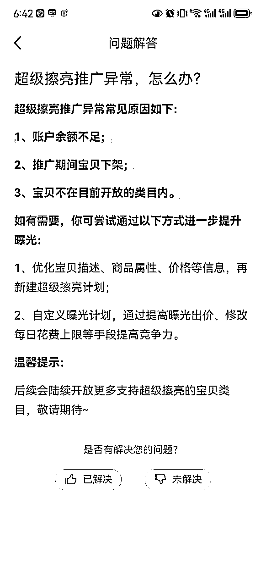
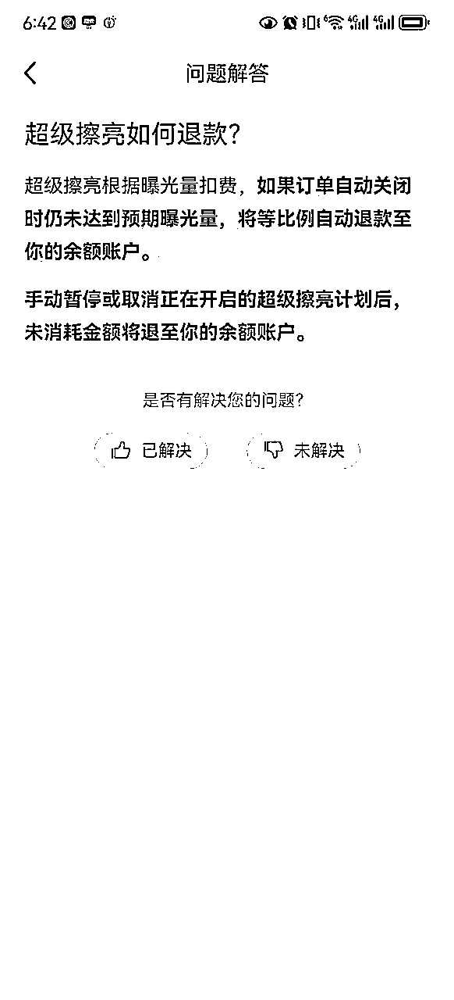
超级擦亮需要开通鱼小铺之后才能够进行操作的。
上品分类都选择电子资料，每天上1-5个，自然出单或者不出单都能开
目前起了三个新号。
第一个 出了30单。16-17天开的。
第二个 出了4单。 20来天开的
第三个 都没出单。 20几天的样子也给我开了。
目前我做起来的两个虚拟号品号（一天100单以上），都是通过超级擦亮做起来的。接下来给大家复盘下从起号到爆单的完整过程。
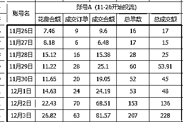
上图是账号开通鱼小铺后的8天投超级擦亮的效果。8天做到单号单天207单
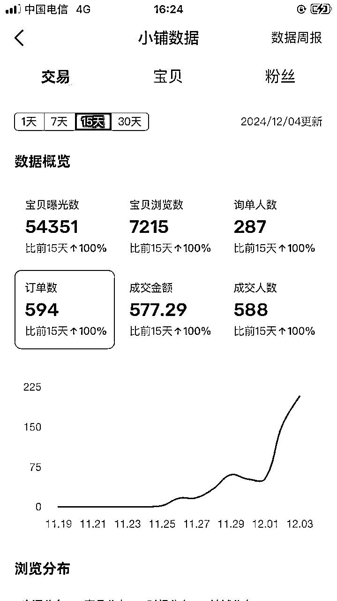
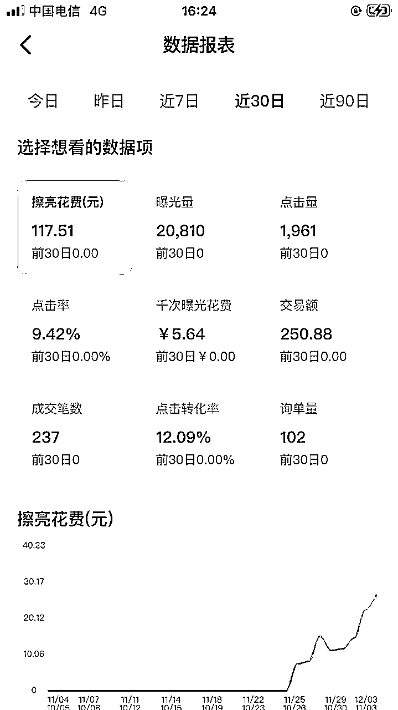
上面是这个号的出单和付费的总数据。
这个账号是11月15号开始操作，在11月25日开通鱼小铺之前做了 上品这个操作。其他都没做。
上品的时候图片只做md5的修改，介绍方面我是一般加一下表情包。或者换个行。不做大的修改。
一共是上了40个品。
刚开始几天每天上3-10个，后续好几天因为忙没上。
在开通鱼小铺之前一共出了4单。
一个是老号当天出单的品会放到这个号上。
第二个是上每天通过软件采集到两天内想要数递增>20品。
软件是自己用影刀写的。 和mysql数据库。每天采集宝贝的想要数。 第二天的减去第一天的然后降序排序。找出想要数增加最快的宝贝。
开通鱼小铺后选品还是这样，下面就不在重复。
开通鱼小铺后的第一个操作就是设置两人小刀、然后将能够加入闲鱼币抵扣和 公益宝贝的都加上，增加曝光度。
然后充值200元，开通描述不符包退。24小时发货，开通后将所有宝贝都加入到服务内，今天看到最近又出了个10分钟发货。有条件的也可以开下，只不过这个服务发不了要赔钱的。所以要谨慎。
就是上了个小黄鱼的品就是互补单。这一天补了5单。
互补是指同行互相补单，加上互相评价，目的是提升店铺整体权重和流量。
然后还是每天上10个品。
这一天开始的投超级擦亮。本身这时候我记得是70来个品。这天投了30个。主要投的是出单的。和推荐的。
投流2个小时之后看了下状况。将消耗0.5元以上且没出单的品进行暂停。其他品继续跑。
另外有点击率，一般ROI跑正的都在10%以上，当然。也有少点的。但是如果低于5%没出单一般也去掉。
然后再过2-3个小时继续这个操作。
然后继续互补评价提升权重。
上品10个。
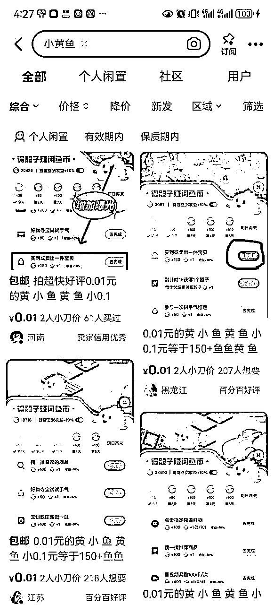
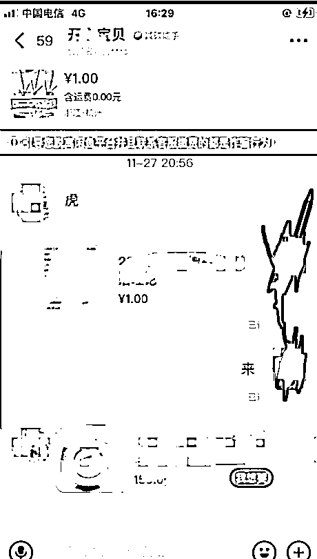
方法一：
搜小黄鱼 ，然后主动找他们去互。如何说看上面图2
操作流程就是 互相拍宝贝，改价成0.01，或者1元。具体商量着定。
然后下单 确认收货 。好评一条龙弄完。
有些人回评很慢。所以不建议确认收货直接好评。 最好是等他们给你确认收货了，你在好评。或者等他好评了再评。 另外看下他们的差评。有些人就是不评。差评能看的到。
主动找他们有个缺点就是比较慢。问好几个才有一个人在线。
方法二：
自己上架这一类的宝贝，等他们找你。
这个方法比较节省时间，他们找你你拍就行
首先看下昨天跑的品继续讲效果不好的去掉。然后有加了30多个品进去，基本上这个号上的品都放进去了。
然后继续互补提升权重。一天补5-10个，补个3-6天，如果单量明细那增长就不做了。改成要客户的好评。
然后删除7天以上0想要的品。
这一天开始对已购买和已确认收货的进行要好评。用来增加店铺权重。
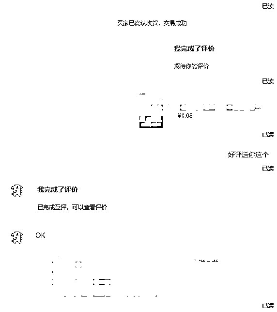
这个号我都是送相关产品的。 比如顾客买的是国考的笔记。我就送真题。等。
当然你也可以返1元红包。我这个号是企业支付宝的。没法转账。只能送相关的宝贝了。
这几天基本上就是重复上面的动作。通过互评，要好评增加店铺权重。通过超级擦亮测出爆款宝贝。这样的操作下来自然起来了。
这个账号目前运营了快俩月了。账号前期的操作和账号A其实是一样的，这里就不在重复复盘了。 这个号接下来主要复盘下是如何做到每天单量持续在100单以上的做法和思考。
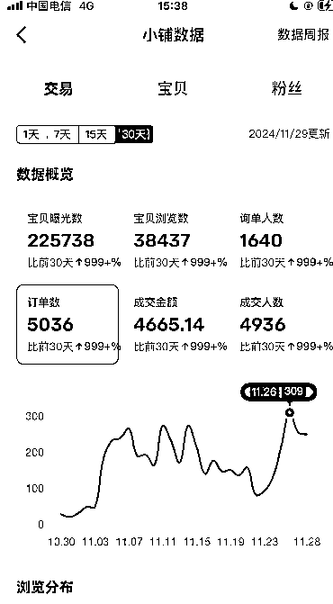
如上图。这个号平均每天订单量在192单以上。
这个号大部分的订单都是一个爆品带来的。
但是这个爆品其实也是做了很多的工作。
首先这个品跑到600单的时候我复制一下。复制的这个跑的明显比原来的快，加上这个品是个有点风险的品。
第一个链接到1000单有点跑不动了。就删除了。
后续第二个链接跑到快1000也有点疲惫了（出单明显减弱）。
我自己作图上了三个加上又复制了下。结果效果都不理想。
最后我搜索我这个的关键词，把最近排在前面的都只改了md5上传了一遍。
然后重复号1的操作。终于跑出来一个。
1、爆品也不是持续的。所以需要及时新建这个品的链接，稍作修改或者让抄别人的。
2、出单不错的品如果没有风险争取做的每个号都上一遍或者几遍。这样才能够获得足够的收益。
3、有风险的不要这么做。我因为两个风险品直接搞得我五个号 每个号最少两条涉假的违规，还封了一个。这个有点不值得。
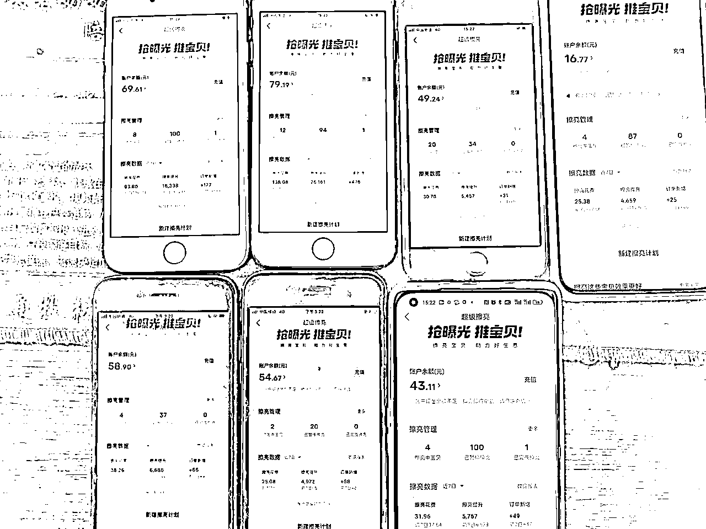
目前8个号累计投了500多个品，大部分号都是正在擦亮的10来个。暂停100个（看图三）。
所以总结了如下几点：
只要是新上的品都可以去投。只不过每隔1-2小时看一下，对于低客单价品（3元以下）消耗超过0.5-1元的没有出单且没有点击的进行暂停。
高客单价的根据实际情况而定。
对于出单的。还有点击率高的可以继续观察。通过大量的投流大量的暂停，筛选出能跑起来且ROI在1.1以上的。因为很多品除了投流还有很多自然流量。当然如果这个品只有投流出单 。roi在1.我一般是关掉。 因为很容易跑成零点几的roi。
目前我第一个起来的号总共投了130个计划，真正持续7天以上的ROI不错的也就两个品。出单的30多个。其他的100个都没有出单。所以一定要多尝试，但要切记不要放任计划跑完。对于不出效果的进行及时暂停，因为本身就赔钱了还没出效果这个品基本上是投不出来的。
这里说下如何找到爆品，另外爆品怎么上架。
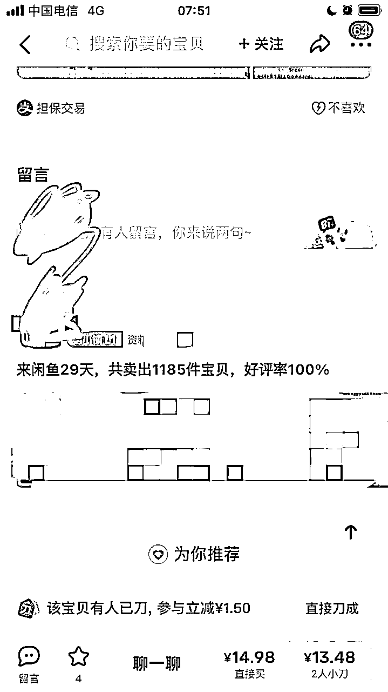
在商品页面往下滑，是可以看到 这个店铺的总销量。 这个销量基本上跟闲鱼后台的销量是同步的。可以通过记录两天的销量来对比出单店每天的销量如何。
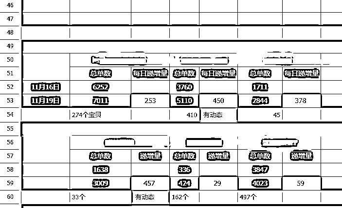
然后记录 这个店铺的数据，我是三天一看。然后算三天销量的平均值。像 第二个和第四个。都是有动态的。这俩号去账号主页 动态页面查看哪个品出单出的多。
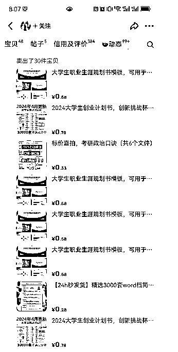
通过上图可以看到， 创业计划书，和生涯规划书出的比较多。直接抄过来，改下图片的md5。文案加点符号发上去就可以了。然后设置夏两人小刀，公益宝贝，加下闲鱼币折扣，开始尝试超级擦亮的推广。
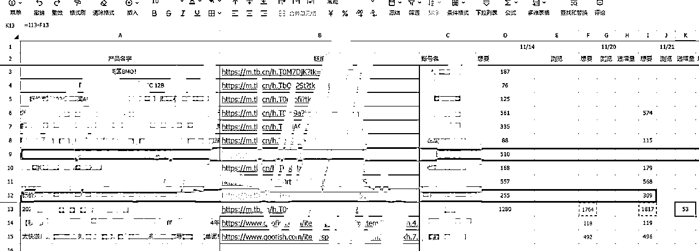
还有就是既然找到了每天出单很多的店铺，接下来就是手工记录一些你觉得销量不错的宝贝，第二天再看他的想要数。通过想要数的对比也能找到爆款宝贝。
如上图， 就是录了一些链接的想要数。 。第十三个宝贝。 11月20号到21号 想要数递增了53.也就是 这个链接至少卖了40个。这种肯定是不错的宝贝，另外红色的是这个链接没了。这样的记录多了。你也能清楚哪些品是比较危险的。
7天有有很多条留言和评价的。说明这个品目前也是有不少的流量的
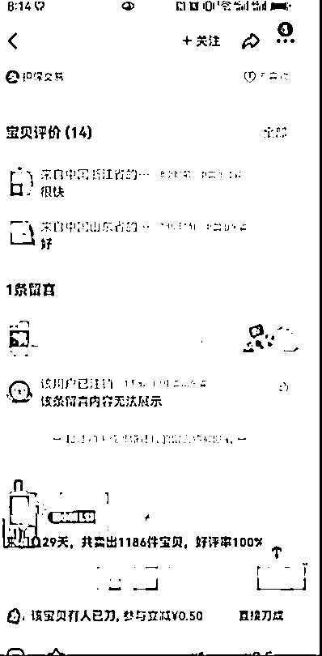
看上图，1天内有多条宝贝评价和评论。证明这个品也是爆品。
还有一点可以看店铺来闲鱼的时间，上图这个店铺 29天，卖出1186.也就相当于一天30单以上，也是个不错的店铺。
当然增长快的店铺要注意他的选品安不安全。因为我记录短时间内新店铺爆起来的。后面大部分都被封了。因为他们的爆品有风险，被举报封号了。
。
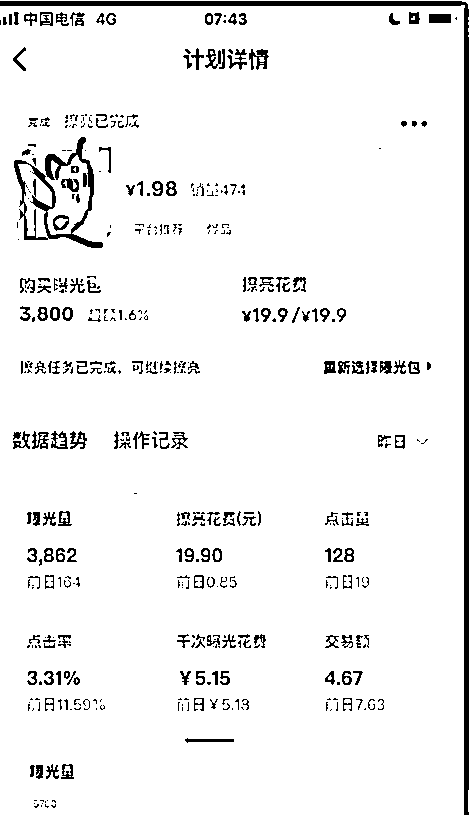
像这个品，刚开始跑的时候roi是2以上.最近因为这个考试时间快到了。需求很低了。昨天 花了20才成交3单总金额4.67.这种品就暂时不要投。或者删除计划新建尝试。
当然问我为啥亏这么多。其实是有不少自然流量的，当天发现不了这个情况。这也是今天早上才发现。
只不过也有发现，当天下午是总成交金额60.超级擦亮花了我40.只不过在忙别的忘了关了。
本身投出来效果不错的后面 roi低于1的。可以删除重新投。这个可以等一天，最近有个之前通过投流跑到几百的品有时候话10元都不出一单了。休息一两天在尝试 有时候还能跑到roi 2以上。当然这种品经常观察。 因为空跑（就是花的很快，但是0出单）的可能性也不小。
我的号1现在11月2号了。忘了充值半天没推广只出了20单（0点到12点）。12月1号这个时间段是 102单。有明显的降低- -
2、超级擦亮计划花完后进入待结算需要第二天才能复投。可以直接删除这个计划。重新建。不用等待。
当然这个后面跑的效果是否有之前那么号暂时没有留意。接下来我会去留意这个事情。在更新到这里。
3.什么时候开始用小黄鱼互补好
上品到20-40个品 之后。因为本身品少的话 ，就刷几个品的评论。不一定能刷出来效果。品多了一个品刷1-3单。 有可能能出来个经常出单的品。
我是一天补3-10条。每天递增。